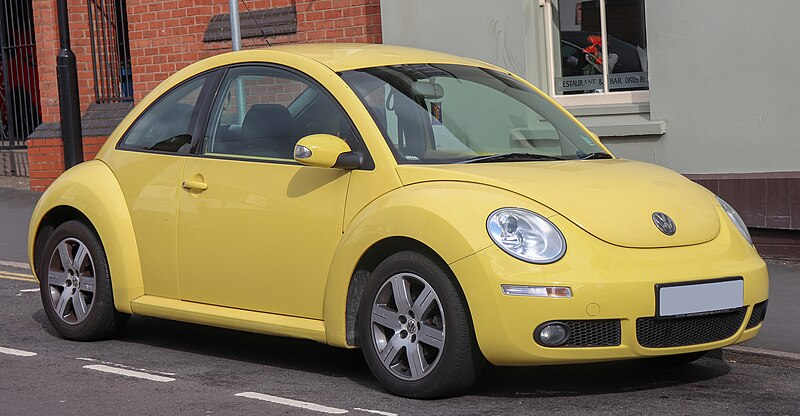
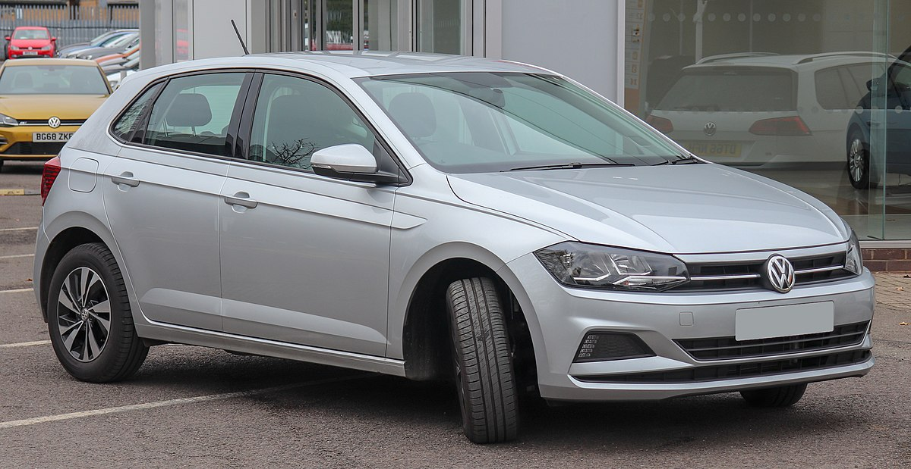
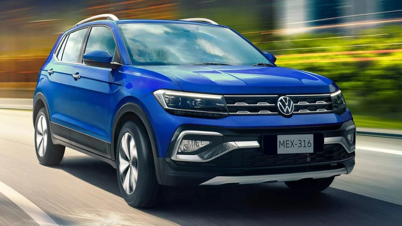

Volkswagen (pronunciación en alemán: [fɔlksˌvaːɡŋ̍] es un fabricante de automóviles con sede en Wolfsburgo, Baja Sajonia, Alemania. Volkswagen es la marca original y más vendida del Grupo Volkswagen, primer fabricante de autos en el mundo en 2020.
Volkswagen significa «automóvil del pueblo» en alemán. El eslogan internacional de la empresa fue «Das Auto» («El automóvil»), aunque debido al escándalo de emisiones contaminantes de vehículos Volkswagen buscó cambiarlo a algo más humilde y menos pretencioso, por lo que, a principios de 2016, ha sido simplemente «"Volkswagen"».
Volkswagen tiene tres modelos en la lista de 10 coches más vendidos de todos los tiempos: Golf, Escarabajo y Passat. Con estos tres coches, el fabricante tiene más en la lista que aquellos de cualquier otro fabricante que continúan produciendo, según Wall Street.
Volkswagen significa «automóvil del pueblo» en alemán. El eslogan internacional de la empresa fue «Das Auto» («El automóvil»), aunque debido al escándalo de emisiones contaminantes de vehículos Volkswagen buscó cambiarlo a algo más humilde y menos pretencioso, por lo que, a principios de 2016, ha sido simplemente «"Volkswagen"».
Volkswagen tiene tres modelos en la lista de 10 coches más vendidos de todos los tiempos: Golf, Escarabajo y Passat. Con estos tres coches, el fabricante tiene más en la lista que aquellos de cualquier otro fabricante que continúan produciendo, según Wall Street.
Aqui algunos de los vehiculos mas populares de la marca

Golf

Beetle

Polo

Taigun

Bocho
Video de la marca